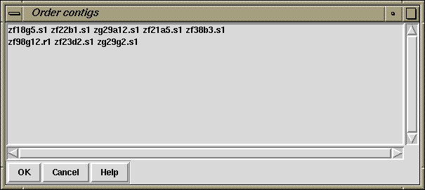

This routine uses read-pair information to try to work out the left to right order of sets of contigs. It is invoked from the gap4 Edit menu. At present it attempts to order all the contigs in the database, and when finished it produces a listbox window which containing one or more sets (one set per line) of contigs listed by the names of their leftmost readings. By clicking on their names in the listbox the user can request that these "super contigs" should be shown in the standard Template display window (see section Template Display).
Using the tools available within this window the user can manually move or complement any contigs which appear to have been misplaced. The combination of automatic ordering and the facility to view the results by eye and manually correct any errors make this a powerful tool. The new contig order can be saved to the database by selecting the "Update contig order" command from the "Edit" menu of the Template display. Note, however, that unlike the editing operations in the Contig editor, which are only committed to the disk copy of the database at the user's request, all the complementing operations in gap4 are always performed both in memory and on the disk. This means that any complementing done as part of the contig ordering process will be immediately committed to disk.
An example of the "Super contig" listbox is shown here.

The example seen in the figures shows a Template display before and after the application of the algorithm.
Before ordering
After ordering
Notice how the operation has reduced the large number of dark yellow (inconsistent) templates by ordering and complementing the contigs so that they are now
consistent and show in bright yellow. The few remaining dark yellow templates
represent problems, possibly with misassembly or with misnaming of
readings. The reliability of these dark yellow templates is also
questionable when noting that one or the other of the readings are
typically within the middle of large contigs, and hence are not likely
to be spanning contigs. The gaps between the contigs, shown in the ruler
at the bottom of the template display, are real estimates of size of the
missing data, based on the expected lengths of the templates.
The algorithm is based on ideas used to build cosmid contigs using
hybridisation data Zhang,P, Schon,EA, Fischer,SG, Cayanis,E,
Weiss,J, Kistler,S and Bourne,P, (1994) "An algorithm based on graph
theory for the assembly of contigs in physical mapping of DNA", CABIOS
10, 309-317. A difficulty for algorithms of this type is dealing with
errors in the data, i.e. pairs of readings that have been incorrectly
assigned to the same template (often by simple typing errors made prior
to the creation of the experiment files). Our algorithm uses several
simple heuristics to deal with such problems but one known problem is that
it does not correctly deal with cases where templates span non-adjacent
contigs, or where such contigs interleave.
![[picture]](c_order_t1,6in.png.html)
(Click for full size image)
![[picture]](c_order_t2,6in.png.html)
(Click for full size image)
Last generated on 25 April 2016.